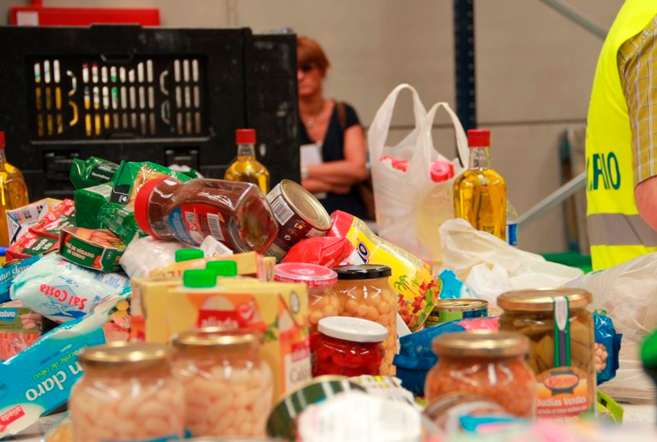
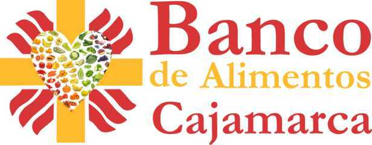
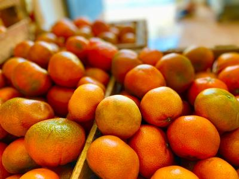
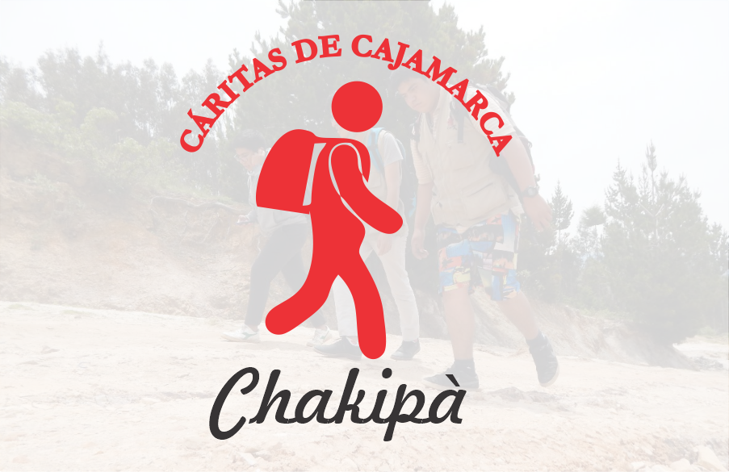
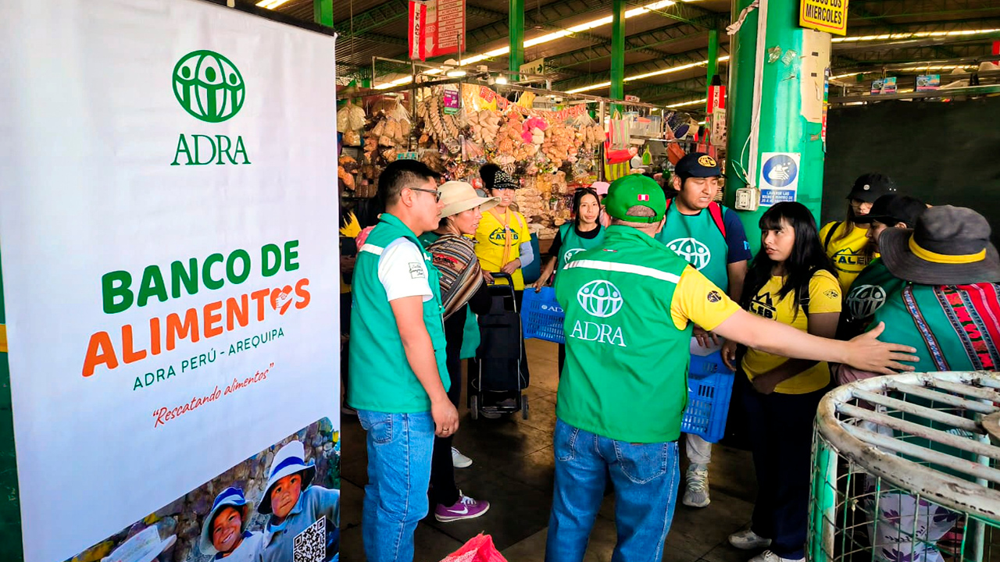
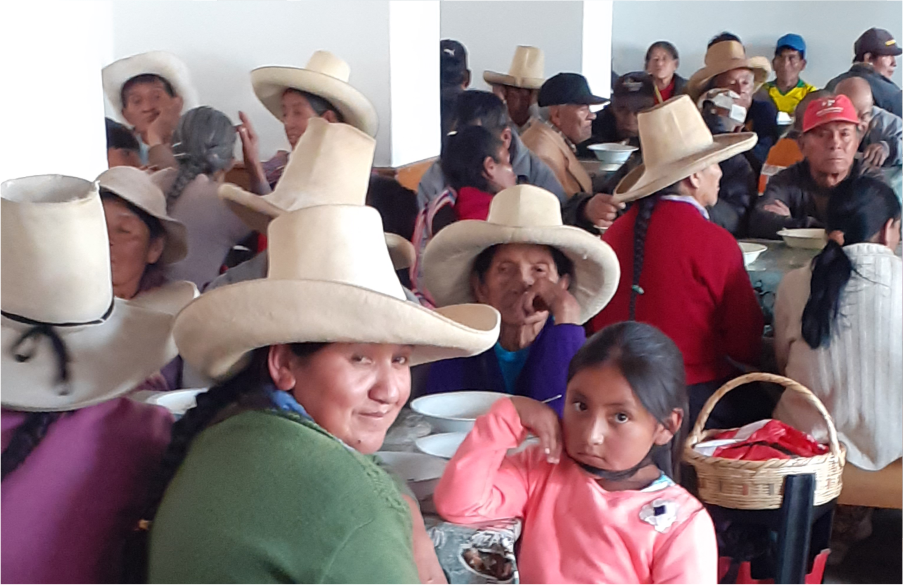
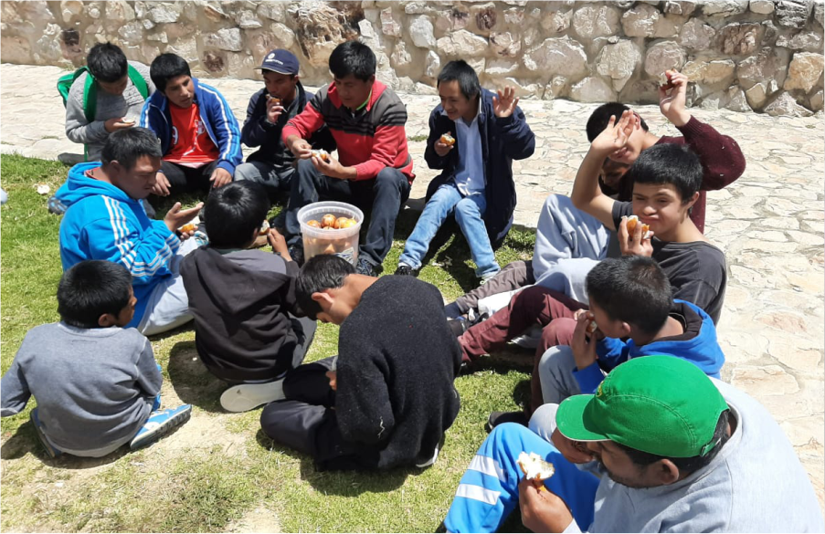

Recibimos diariamente donaciones de Plaza Vea de Cajamarca. Un gran aliado para luchar contra desperdicio de alimentos y contribuir al hambre cero


Ayúdanos a combatir el hambre y el desperdicio de alimentos.

Este año 2023, desde Marzo a Setiembre del 2023 ejecutamos el proyecto de Rescate de Alimentos gracias a Cáritas del Perú y el Programa Mundial de Alimentos.
MÁS INFORMACIÓN.jpeg)
Gracias a las donaciones de frutas provenientes del rescate de alimentos en “Mercados de abastos”, se preparan 350 loncheras semanales para niños de bajos recursos económicos.
MÁS INFORMACIÓN
Mediante el mecanismo de “Donación de alimentos a cambio del beneficio tributario de deducción del impuesto a la renta”, se ha podido rescatar alimentos de la Agroindustria.
MÁS INFORMACIÓN
El comedor "Padre Daniele B." forma parte de "Comedores Solidarios" quienes brindan gratuitamente desayunos y almuerzos.
MÁS INFORMACIÓN
Contribuimos al Programa Social "Chakipa" de la Cáritas de Cajamarca en el reparto de 600 kits de alimentos a familias vulnerables.
MÁS INFORMACIÓN
Apoyamos a "Casas Solidarias" dedicadas al cuidado de personas con discapacidad y en situaciones difíciles.
MÁS INFORMACIÓNTenemos el compromiso de ayudar a
Mensualmente, semanalmente y diariamente, reciben ayuda alimentaria para mejora su calidad de vida y nutrición.
Voluntarios
Alimentos Rescatados
Año 2022Organizaciones Beneficiadas
Alimentos Rescatados
Año 2023Próximamente
Un Mes Contigo!!!
Puedes ayudarnos a ayudar de distintos modos. Sé parte de esto.
Conoce nuestras últimas campañas
100 Toneladas De Alimentos Rescatados
En El Año 2020
Solamente En La Ciudad De Cajamarca
Los Voluntarios son el alma de esta institución
Únete y sé nuestro aliado
Únete al Banco de Alimentos de Cajamarca como aliado y ayúdanos a recopilar y distribuir alimentos para las familias más vulnerables.

Recibimos diariamente donaciones de Plaza Vea de Cajamarca. Un gran aliado para luchar contra desperdicio de alimentos y contribuir al hambre cero

Contribuimos al Programa Social "Chakipà" de la Cáritas de Cajamarca en el reparto de 600 kits de alimentos a familias vulnerables.

El comedor "Padre Daniele B." forma parte de "Comedores Solidarios" quienes brindan gratuitamente desayunos y almuerzos.

Entregamos donaciones semanales de alimentos a "Casas Solidarias" dedicadas al cuidado de personas con discapacidad y en situaciones difíciles.
Ubicación: Pasaje El Molino 150, Cdra. 8 Jr. Apurímac, Barrio La Merced - Cajamarca
Recibimos donaciones de alimentos todos los días y necesitamos tu ayuda para distribuirlas. El voluntariado es esencial en nuestra misión de combatir el hambre y el desperdicio de alimentos. Regalamos nuestro bien más valioso: EL TIEMPO.
Puedes ayudarnos en:
Programa Chakipá: Todos los sábados apoyamos el programa de la Cáritas de Cajamarca entregando kits de alimentos a familias vulnerables. ¡Acompáñanos en esta importante misión!
¿Quieres ser Voluntario?
Contáctanos y forma parte de una comunidad que genera cambios reales
Contáctanos AhoraAquí irá la información de correo.
Accede al panel interno del Banco de Alimentos de Cajamarca. Este es un formulario de simulación.
Contribuir a la reducción sostenible del hambre y la desnutrición en poblaciones en situación de vulnerabilidad, mediante la recuperación, gestión y distribución eficiente de alimentos aptos para el consumo. Asimismo, promover la disminución del desperdicio alimentario a través de prácticas responsables, alianzas estratégicas y el fortalecimiento de una cultura de solidaridad y compromiso social.
Consolidarnos como una organización líder y referente en la lucha contra el hambre y la desnutrición a nivel regional y nacional, destacando por la eficiencia, transparencia e innovación en la gestión y redistribución de alimentos.
El Banco de Alimentos de Cajamarca tiene como fin principal “RESCATAR ALIMENTOS”, cuyo tenor en sus estatutos es: solicitar a cualquier persona natural y jurídica, así como a cualquier organismo de la administración pública la donación de alimentos.
Fomentamos la donación de alimentos en tiendas, mayoristas, minimarkets, supermercados y restaurantes, entre otros, a través de certificados de donación y deducción de impuestos bajo las leyes 30498 y 30631 del Estado Peruano.
Desde Noviembre de 2019, se inició el rescate de alimentos gracias a Cáritas de Cajamarca en la Tienda “Plaza Vea” de Supermercados Peruanos.
Gracias, en gran parte, a Plaza Vea. 100 toneladas de alimentos rescatados en el año 2020.

Como respuesta a la crisis económica originada por la Pandemia del Covid-19, Cáritas de Cajamarca crea en Abril del 2020 el programa de ayuda social: Banco de Alimentos en favor de las familias más vulnerables de Cajamarca.
Nuestro objetivo es rescatar alimentos en buen estado para redistribuirlos y contribuir a la seguridad alimentaria, evitando el desperdicio.
Ayúdanos a sostener nuestra labor DONANDO PARTE DE TU IMPUESTO A LA RENTA. Con tu apoyo, podemos seguir llevando alimentos y esperanza a quienes más lo necesitan.
Donación ON-LINE
Tenemos el compromiso de ayudar a 600 Familias Vulnerables y 10 Casas de Ayuda Social. En total son 1100 beneficiarios.
SEGUIMOS DÍA A DÍA RESCATANDO ALIMENTOS y RECAUDANDO FONDOS, pero NO ES SUFICIENTE.
¿Quieres ayudarnos?